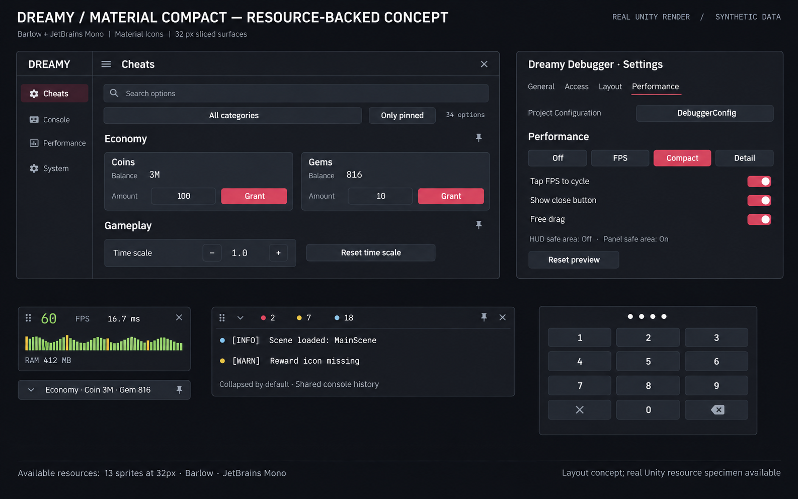

Concept AI đã chốt — chỉ làm tham chiếu
Ảnh dưới là concept AI trước khi triển khai, không phải ảnh Unity. Các ảnh trong gallery phía trên dùng tài nguyên và control thật; không khẳng định trùng từng pixel với AI.

Ảnh dưới là concept AI trước khi triển khai, không phải ảnh Unity. Các ảnh trong gallery phía trên dùng tài nguyên và control thật; không khẳng định trùng từng pixel với AI.
